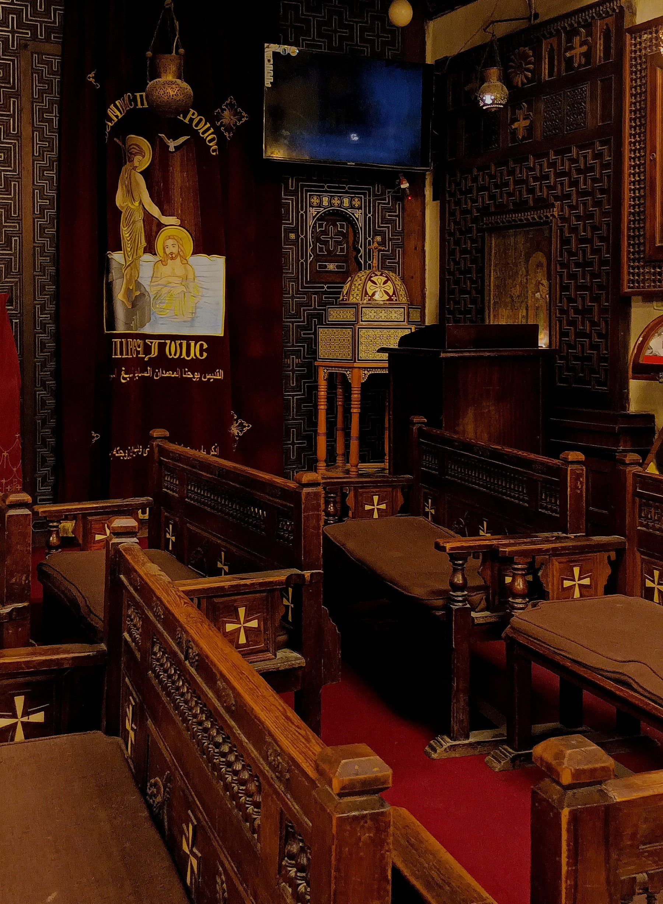

The Hanging Church is located in the Old Cairo neighborhood, in the important archaeological area of Coptic Cairo. It is close to the Amr Ibn Al-Aas Mosque, the Ibn Ezra Synagogue, the Church of Saint Mina next to the Babylon Fortress, the Church of the Martyr Mercurius (Abu Sefein), and many other churches.
It is called the Hanging Church because it was built on two ancient towers of the Roman fortress (Babylon Fortress), which was built by Emperor Trajan in the 2nd century AD. The Hanging Church is considered the oldest surviving church in Egypt.
The Roman fortress in Coptic Cairo (Old Cairo) has a nave suspended above a passageway. The church is accessed via 29 steps; early travelers to Cairo called it the "Church of the Steps." The ground level has risen by about six meters since Roman times, so most of the Roman tower is buried underground, diminishing the visual impact of the church's elevated position.
The church was built on the ruins of a place where the Holy Family (the Virgin Mary, the infant Jesus, and Saint Joseph the Carpenter) are said to have taken refuge during their three years in Egypt, fleeing Herod, the ruler of Palestine, who had ordered the massacre of the infants out of fear of a prophecy. Some believe it was the site of a cell (a place of seclusion) where a female nun lived in one of the rock-cut chambers carved into the site. Patriarch Christodoulos was the first to take the Hanging Church as the seat of the Pope of Alexandria. A number of patriarchs were buried there in the eleventh and twelfth centuries, and there are still pictures and icons of them in the church, which are lit with candles. Trials of priests, bishops, and heretics were also held there. It is considered an important pilgrimage site for the Copts, due to its historical antiquity, the connection of the place to the Holy Family, and its presence among churches and monasteries of holy saints, which makes it easy to visit them.
On my visit, it was the last place I went before the Ben Ezra Synagogue, and honestly, I wanted to sit and contemplate every inch of it. It's incredibly beautiful, the air is pleasant, and it's wonderful to have a guidebook to explain everything you see there.
It's also wonderful to see people from other countries admiring the beauty of your own.